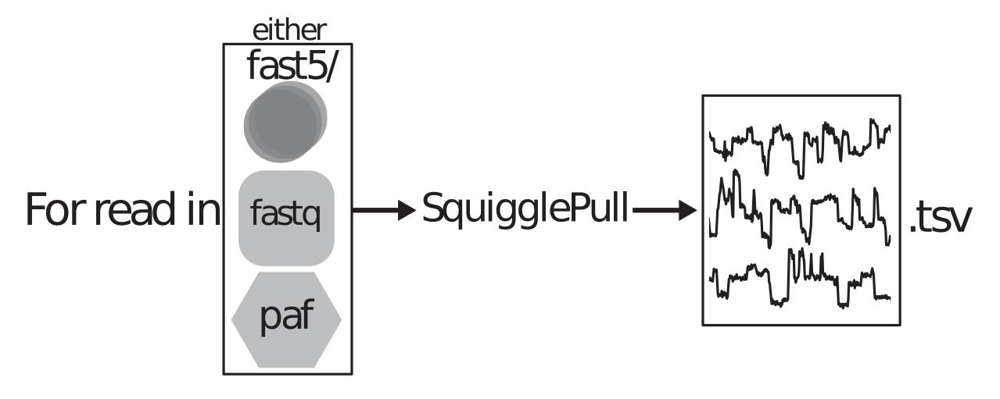

SquigglePull
Background
Up until early 2019, Oxford Nanopore sequencing devices stored the raw current measurements and associated metadata in a single Hierarchical Data Format (HDF5) format file, called a fast5 file. After early 2019 devices were updated to produce multi-fast5 files, which contained multiple reads, usually 4000, in a single file.
Processing fast5 files has been troublesome for a number of reasons:
- Unfamiliar format to many people.
- Need 3rd party library to open and read (h5py, pytables).
- libraries are not thread safe and locks files.
- Don't compress as well when single files. (better in multi-fast5)
SquigglePull outputs a single tab separated value (.tsv) file where each row contains a single signal and read selected metadata.
Current format is designed as an example of producing a more accessible file format for those wishing to get started with nanopore signal data. Columns and data inclusion is subject to change depending on use case.
Getting Started
SquigglePull can extract both raw current measurements as well as event data. It also has some basic arguments and code scaffolding extraction profiles. This allows the user to implement their analysis methods into the extraction protocol for integration with pipelines, or just quick data trimming. For example using the form -f pos1, and the tarting -t 20,110, only the signal values between 20 and 110 will be extracted.
Inputs
SquigglePull takes 3 mandatory arguments
- path - Top directory of fast5 files
- form - Format of targeting information (default: all)
- raw/event - Raw signal or event data

Instructions for use
Simply point SquigglePull to a top directory containing fast5 files, and the signal will be extracted to STDOUT
Quick start
Extract all raw signal
python SquigglePull.py -r -p test/R9_raw_data/ > data.tsv
Extract events between position 20 and 210
python SquigglePull.py -e -p test/R9_event_data/ -t 20,110 -f pos1 > data.tsv
Full usage
usage: SquigglePull.py [-h] [-p PATH] [-t TARGET] [-f {pos1,all}] [-r | -e]
[-v] [-s]
SquigglePull - extraction of raw/event signal from Oxford Nanopore fast5 files
optional arguments:
-h, --help show this help message and exit
-p PATH, --path PATH Top directory path of fast5 files
-t TARGET, --target TARGET
Target information as comma delimited string
structured by format type
-f {pos1,all}, --form {pos1,all}
Format of target information
-r, --raw Target raw signal
-e, --event Target event signal
-v, --verbose Engage higher output verbosity
-s, --scale Scale signal output for comparison